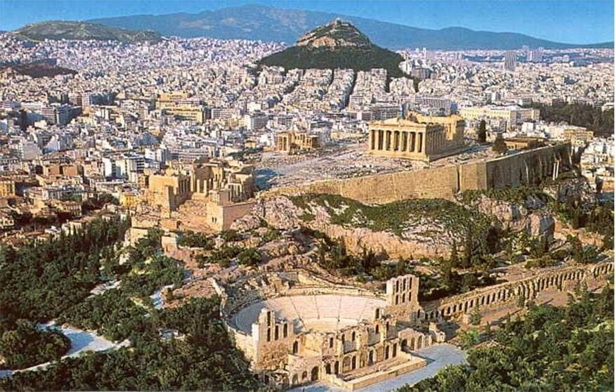
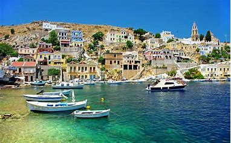
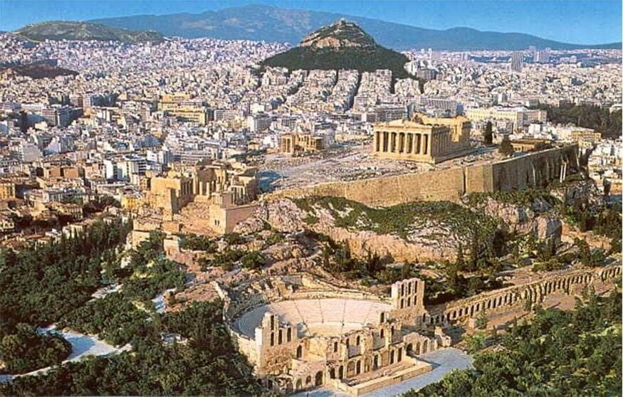
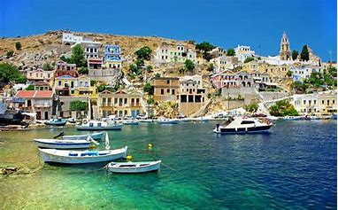
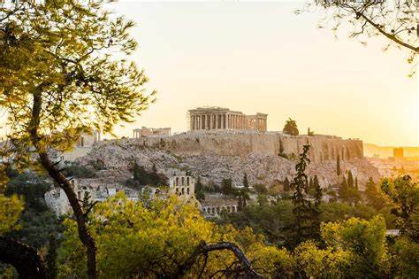
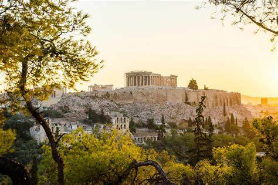

Contenido Web
Galeria de Imagenes

 



 

Lúgares de Interés
Atenas:
Una ruta de los lugares turísticos de Grecia debe comenzar siempre por su capital, Atenas.
La belleza de Atenas comienza en su nombre. Nació hace más de 3.000 años, gracias al comercio marítimo que llegaba al puerto de El Pireo. Aquí nació la democracia y las ideas y pensamientos de sus filósofos, escritores, matemáticos, políticos e historiadores, marcaron el devenir de Grecia, Roma y la cultura occidental en general.
En Atenas se hallan los monumentos arquitectónicos más importantes que ver en Grecia. El Partenón se erige imponente en
Para tomarle el pulso a la ciudad, camina sin rumbo por los barrios de Plaka, Monastiraki, Anafiótika o el Mercado Central de Atenas. A pesar de la crudeza con la que la crisis económica se ha dejado sentir en Grecia, los atenienses siguen teniendo un gran espíritu mediterráneo e intentan sacar el mejor partido a la vida.
Santorini:
Aunque hay muchas islas que visitar en Grecia, las más conocidas de todas son las que forman el archipiélago de Santorini.
Las fachadas blancas – y dinteles y puertas azules – de las casas de los pueblos que se asoman a acantilados que mueren en el mar, aparecen en cualquier postal de lugares turísticos de Grecia.
Puedes recorrer las islas que forman Santorini en barco. La villa más romántica es Oia, aunque la mayoría llega con el ferry a Fira. Contrata una excursión en bote y date un chapuzón en playas muy distintas entre sí. También puedes alquilar un coche o una moto y visitar sitios arqueológicos como Akrotiri y la antigua Thira.
Santorini está considerado como uno de los lugares más románticos del mundo, así que no te pierdas sus legendarias puestas de sol.
Naxos
Otra de las islas que ver en Grecia es Naxos.
Naxos es la más grande y fértil de las islas Cícladas que reposan en el Egeo. La lluvia es generosa en la zona y permite que la población de la isla pueda vivir de la recolección de frutas y verduras, apoyándose también en la ganadería y el turismo.
Como es habitual en Grecia, en Naxos podrás encontrar varios sitios arqueológicos – incluyendo una antigua fortaleza veneciana – y preciosas playas. Dos de las que merecen la pena están muy cerca de la capital: Agia Anna y Agios Prokopios. Esta última es perfecta para los amantes del nudismo.
La mejor forma de moverse por Naxos es en bicicleta, quad o buggy.
Rodas
La isla más grande del Dodecaneso se encuentra a tan sólo 18 km de las costas turcas y posee un gran legado de mitos y leyendas, además de algunas de las playas más famosas que visitar en Grecia.
En Rodas, el mito dice que Helios engendró 8 hijos con la ninfa Rodo, hija de Poseidón. De ella proviene el nombre de la isla y sus más de 300 días de sol al año.
La capital de la isla – llamada también Rodas – posee la Ciudad Medieval, declarada Patrimonio de la Humanidad por la UNESCO. Los museos Arqueológico y Bizantino son los más visitados.
El pueblo de Lindos, 47 km al sureste de Rodas, posee la fama de ser el más bello que ver en Grecia. Si eres más de dorarte al sol frente a aguas cristalinas, visita las playas de Elli, Kalithea, Ladikó o Faliraki.